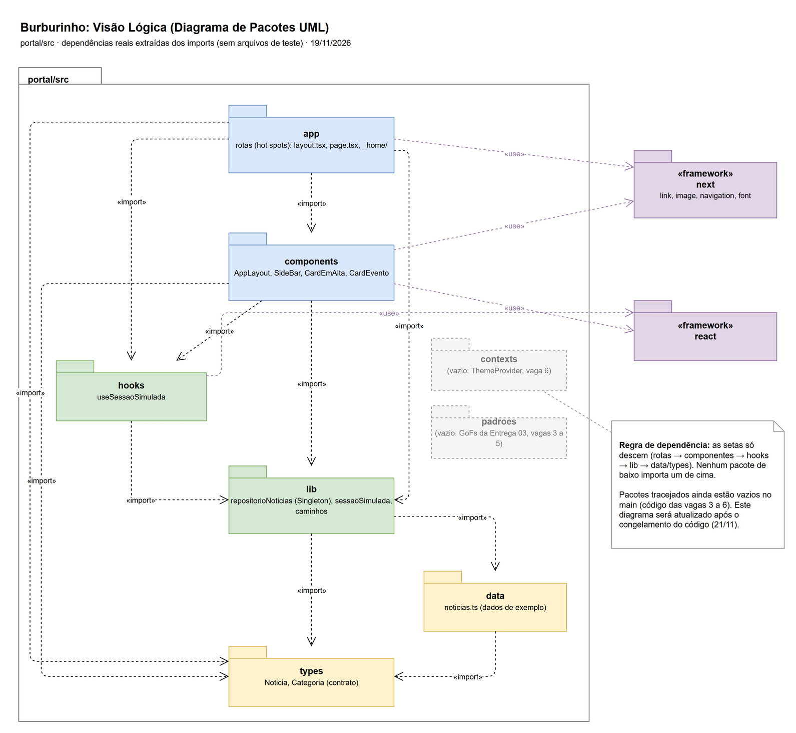
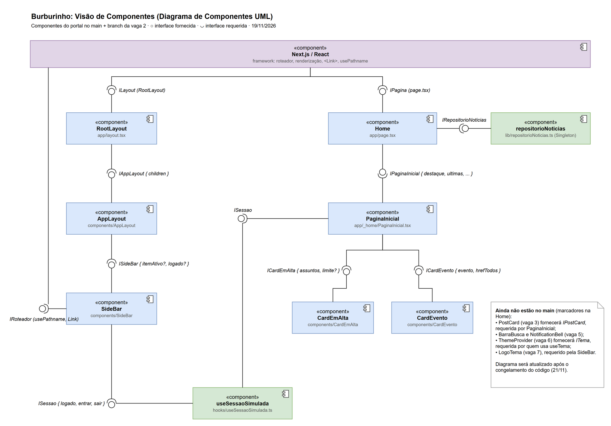

1.1.1. Elementos de DAS (Iniciativa Extra)
Escopo desta página
A entrega mínima do Grupo 3 é a de Reutilização (1.1.2). Esta página é uma iniciativa extra: apresenta duas visões arquiteturais (Visão Lógica e Visão de Componentes) do mesmo código do portal, para mostrar como a reutilização se organiza na arquitetura. Não é um DAS completo segundo o template adotado na disciplina; as demais seções do template não foram elaboradas.
Versão preliminar (19/11/2026)
Os diagramas refletem o código que já existe: o main (projeto base da vaga 1) mais a branch da vaga 2. Os pacotes contexts e padroes e os componentes das vagas 3 a 7 ainda não estão no main; aparecem tracejados ou citados em nota. Os diagramas serão atualizados depois do congelamento do código, em 21/11.
Participantes
| Nome do Membro | Contribuição |
|---|---|
| João Pedro Lopes | Diagramas de Pacotes e de Componentes, levantamento das dependências reais no código e redação desta página |
Representação Arquitetural
O portal é uma aplicação Next.js (React + TypeScript) cujo código fica em portal/src, organizado em pacotes (pastas) com responsabilidades separadas:
appcontém as rotas, os hot spots que o framework chama (layout.tsx,page.tsx);componentscontém os componentes reutilizáveis de interface;hooksecontextscontêm a lógica reutilizável que os componentes consomem;libepadroescontêm a lógica sem interface, incluindo os GoFs reaproveitados da Entrega 03;dataetypescontêm os dados de exemplo e os contratos compartilhados (Noticia,Categoria).
A regra de dependência é que as importações só "descem": páginas usam componentes, componentes usam hooks, hooks usam lib, e lib usa data e types. Nenhum pacote de baixo importa um de cima. É isso que permite reutilizar um componente em outra tela sem levar junto a página que o usa.
Visão Lógica: Diagrama de Pacotes

Figura: Diagrama de pacotes do portal Burburinho (Fonte: João Cruz, 2026) · Ver em tela cheia
Fonte editável: pacotes.drawio. Notação UML: pacote com aba; dependência tracejada com seta aberta, «import» entre pacotes do projeto e «use» para o framework.
As setas foram levantadas a partir das linhas import de cada pasta, desconsiderando os arquivos de teste (*.test.ts(x)).
| Pacote | Responsabilidade | Depende de |
|---|---|---|
app |
Rotas e páginas: layout.tsx (aplica o AppLayout), page.tsx (Home) e _home/ (parte interativa da Home) |
components, hooks, lib, types, next, react |
components |
Componentes reutilizáveis de interface (AppLayout, SideBar, CardEmAlta, CardEvento) |
hooks, lib, types, next, react |
hooks |
Lógica reutilizável com estado do React (useSessaoSimulada) |
lib, react |
lib |
Lógica sem interface: repositorioNoticias (Singleton), sessaoSimulada, caminhos |
data, types |
data |
Dados de exemplo (noticias.ts) |
types |
types |
Contrato compartilhado (Noticia, Categoria, NOMES_CATEGORIAS) |
nenhum |
contexts |
ThemeProvider (vaga 6) |
ainda vazio |
padroes |
GoFs da Entrega 03 adaptados (vagas 3 a 5) | ainda vazio |
Senso crítico: não há dependência que "suba" nem ciclo entre pacotes. Dois pontos merecem atenção:
appimportahooksdiretamente. A Home usauseSessaoSimuladaem_home/PaginaInicial.tsx. Não viola a regra, já que as dependências continuam descendo, mas mostra que parte da lógica de tela ficou na rota e não em um componente.- Os pacotes
libetypessão os mais usados. Uma mudança no contratoNoticiaafeta o portal inteiro. O custo é aceitável justamente porque o contrato é estável e foi combinado no início do projeto (issue #1).
Visão de Componentes: Diagrama de Componentes UML

Figura: Diagrama de componentes UML do portal Burburinho (Fonte: João Cruz, 2026) · Ver em tela cheia
Fonte editável: componentes.drawio.
Notação (slides 60 e 61 do PDF da aula):
- cada componente é um retângulo com o estereótipo
«component»e o ícone de componente; - a interface fornecida é a "bola" (○), do lado de quem a oferece;
- a interface requerida é o "soquete" (◡), do lado de quem precisa dela;
- quando os dois se encaixam, forma-se um conector de montagem.
Em React, a interface fornecida por um componente é o tipo das suas props (ex.: ISideBar { itemAtivo?, logado? }), e a de um hook é o valor que ele devolve (ex.: ISessao { logado, entrar, sair }).
Como o diagrama evidencia a reutilização:
- Um componente atende várias telas. O
AppLayouté requerido uma única vez, peloRootLayout, e o framework o aplica a todas as páginas. - Uma mesma lógica tem dois consumidores. O
useSessaoSimuladaforneceISessaopara aSideBare para aPaginaInicial. - O framework também é um componente. O Next.js requer as interfaces
ILayouteIPagina, que nós fornecemos (os hot spots, Princípio de Hollywood). Em troca, ele forneceIRoteador(usePathname,Link), que aSideBarrequer para descobrir o item ativo. - Trocar uma implementação não afeta quem a usa. Quem requer
IRepositorioNoticias(a Home) não sabe que, por trás, existe um Singleton com dados de exemplo. Trocar por uma API só mudaria o componente provedor.
Relação com o Código
| Elemento do diagrama | Arquivo no código |
|---|---|
Pacote app · componentes RootLayout, Home, PaginaInicial |
app/layout.tsx · app/page.tsx · app/_home/PaginaInicial.tsx |
AppLayout · IAppLayout { children } |
components/AppLayout/AppLayout.tsx |
SideBar · ISideBar |
components/SideBar/SideBar.tsx · itensMenu.ts |
CardEmAlta · ICardEmAlta |
components/CardEmAlta/CardEmAlta.tsx |
CardEvento · ICardEvento |
components/CardEvento/CardEvento.tsx |
Pacote hooks · useSessaoSimulada · ISessao |
hooks/useSessaoSimulada.ts · lib/sessaoSimulada.ts |
Pacote lib · repositorioNoticias · IRepositorioNoticias |
lib/repositorioNoticias.ts |
Pacotes data e types |
data/noticias.ts · types/noticia.ts |
Next.js / React · IRoteador |
package.json (Next.js 16, React 19) |
Uso da IA Generativa
Usei o Claude Code para levantar as dependências entre pacotes (busca das linhas import em portal/src) e para gerar os arquivos .drawio. Validei cada seta abrindo os arquivos e cada imagem exportada visualmente. Correções de senso crítico:
- Dependência falsa: a busca automática encontrou
lib → lib/repositorioNoticias, mas era só um comentário dentro do próprio arquivo, não uma importação. A seta não entrou no diagrama. - Arquivos de teste: os testes importam pacotes que o código de produção não importa. Foram desconsiderados para o diagrama mostrar a arquitetura de quem roda no navegador.
- Notação de interfaces: conferi um a um se a "bola" ficou no provedor e o "soquete" no consumidor (ex.: o
RootLayoutforneceILayoute o Next.js requer, e não o contrário). - Diagrama do real, não do ideal: os pacotes vazios (
contexts,padroes) e os componentes das outras vagas não foram desenhados como se já existissem. Ficaram tracejados ou citados em nota.
Versionamento
| Nome do Membro | Contribuição | Data |
|---|---|---|
| Giovanna Felipe | Estruturação da página como iniciativa extra, com guia de preenchimento | 18/11/2026 |
| João Pedro Lopes | Versão preliminar dos diagramas de Pacotes e de Componentes e de todas as seções da página (issue #2) | 19/11/2026 |
Referências
SERRANO, Milene. Reutilização & Framework. Material de aula da disciplina Arquitetura e Desenho de Software. Brasília: Universidade de Brasília, 2026. Slides 11 a 14, 45 a 50, 60 e 61.
UNIVERSIDADE FEDERAL DO RIO GRANDE DO NORTE. Modelo de Documento de Arquitetura de Software. Disponível em: https://www.dca.ufrn.br/~anderson/FTP/dca0120/modelodocarquiteturasoftware.doc. Acesso em: 19 nov. 2026.
OBJECT MANAGEMENT GROUP. OMG Unified Modeling Language (OMG UML), Version 2.5.1. 2017. Disponível em: https://www.omg.org/spec/UML/2.5.1. Acesso em: 19 nov. 2026.
VERCEL. Next.js Documentation: Layouts and Pages. Disponível em: https://nextjs.org/docs/app/getting-started/layouts-and-pages. Acesso em: 19 nov. 2026.